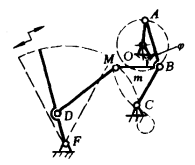

机构示意图
机构特性简介
中途停歇摆动机构

主动曲柄OA通过四杆机构OABC的连杆AB上的M点带动摇杆DF作往复摆动。因为M点的轨迹m 的某段曲线与以DM为半径、D为圆心的圆弧近似，即D是该段曲线的曲率中心，故使摆杆在摆动中途作 近似停歇。 各杆长度可参考下列比例：AB=BC=BM=l，MD=1.603，AO=0.54，FD=0.695，CO=1.3，CF=1.8，OF=2.78，φ=80°。